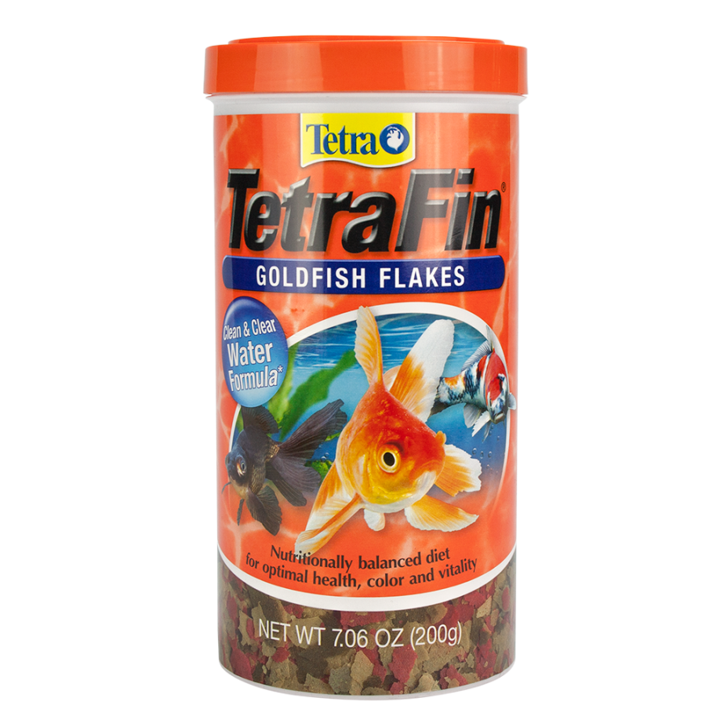
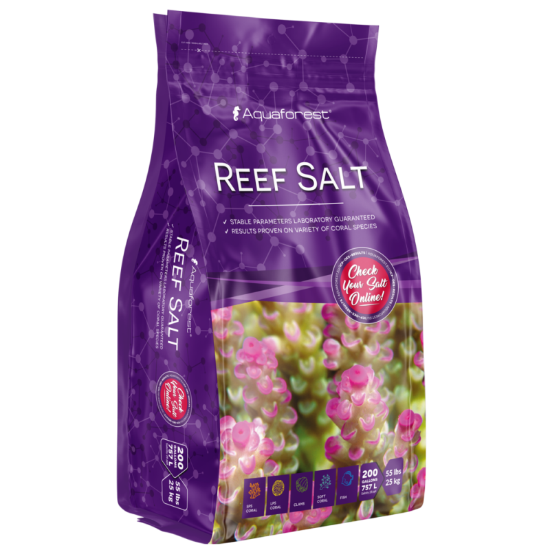
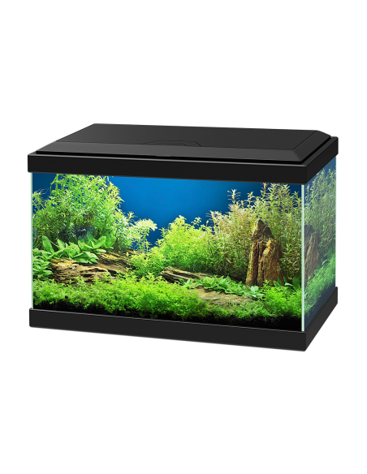

Bienvenido a la Tienda de Mascotas
Inicio
Animales
Productos Perros
Productos Gatos
Servicios
Contacto
Consultas
Productos para Gatos

Comida para peces
Los mejores alimentos

Piedras de decoracion
Las mejores decoraciones.

Acuarios
Los mejores acuarios.